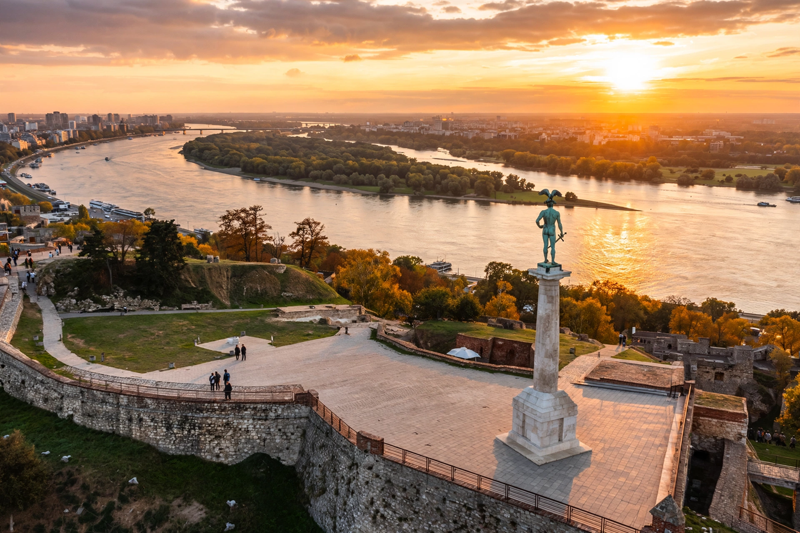

| Republic of Serbia | |
|---|---|
 Belgrade Fortress at the confluence of the Sava and Danube | |
| Capital | Belgrade |
| Official language | Serbian |
| Government | Unitary parliamentary republic |
| Area | 88,361 km² (including Kosovo claim) |
| Population | ~6.6 million (excluding Kosovo) |
| Currency | Serbian dinar (RSD) |
Serbia, officially the Republic of Serbia, is a landlocked country in Southeast Europe, situated at the crossroads of the Pannonian Basin and the Balkans. It shares land borders with Hungary to the north, Romania to the northeast, Bulgaria to the southeast, North Macedonia to the south, Croatia and Bosnia and Herzegovina to the west, and Montenegro to the southwest, and claims a border with Albania through the disputed territory of Kosovo. Serbia has about 6.6 million inhabitants, excluding Kosovo. Its capital is Belgrade, one of the oldest and largest cities in Southeast Europe.
The territory of modern Serbia has been inhabited since the Paleolithic. In the 6th century, Slavs began settling the Balkans, and the medieval Serbian state rose to prominence under the Nemanjić dynasty, reaching its height under Stefan Dušan in the 14th century. The Ottoman Empire conquered Serbia in stages culminating in 1459, and Ottoman rule lasted, with interruptions, until the Serbian uprisings of the early 19th century led to autonomy and then full independence in 1878. After the First World War Serbia formed the core of the Kingdom of Yugoslavia. Following the Second World War, Serbia was a constituent republic of the Socialist Federal Republic of Yugoslavia. After Yugoslavia's breakup in the 1990s, Serbia formed a union with Montenegro, which dissolved peacefully in 2006, restoring Serbia's independence. In 2008 Kosovo unilaterally declared independence, recognised by many Western states but not by Serbia.
Northern Serbia, Vojvodina, lies in the flat Pannonian Plain, while the south is mountainous, crossed by the Dinaric Alps, the Carpathians and the Balkan Mountains. The Danube flows through the country for 588 km, forming much of its northern and eastern borders. Serbia has a moderate continental climate with cold winters and hot summers.
Serbia is a parliamentary republic; the president is head of state and the prime minister heads the government. It is a candidate for membership of the European Union, having opened accession negotiations in 2014. The economy is dominated by services, with significant industry and agriculture; major exports include automobiles, electrical machinery, raspberry and other agricultural products. Key sites such as the medieval monasteries of Studenica reflect the country's Orthodox Christian heritage, shaped by figures such as Stefan Nemanja.